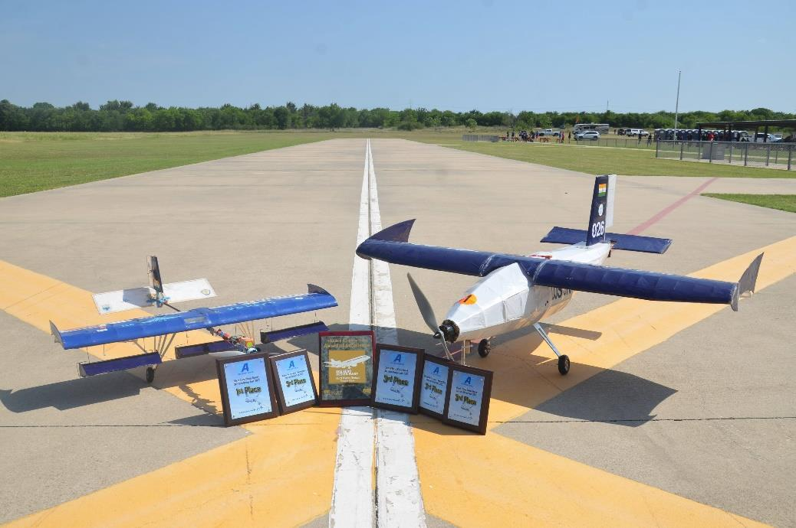
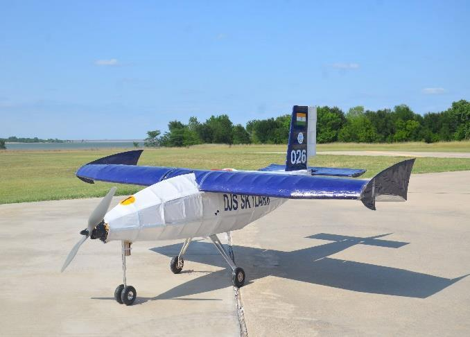
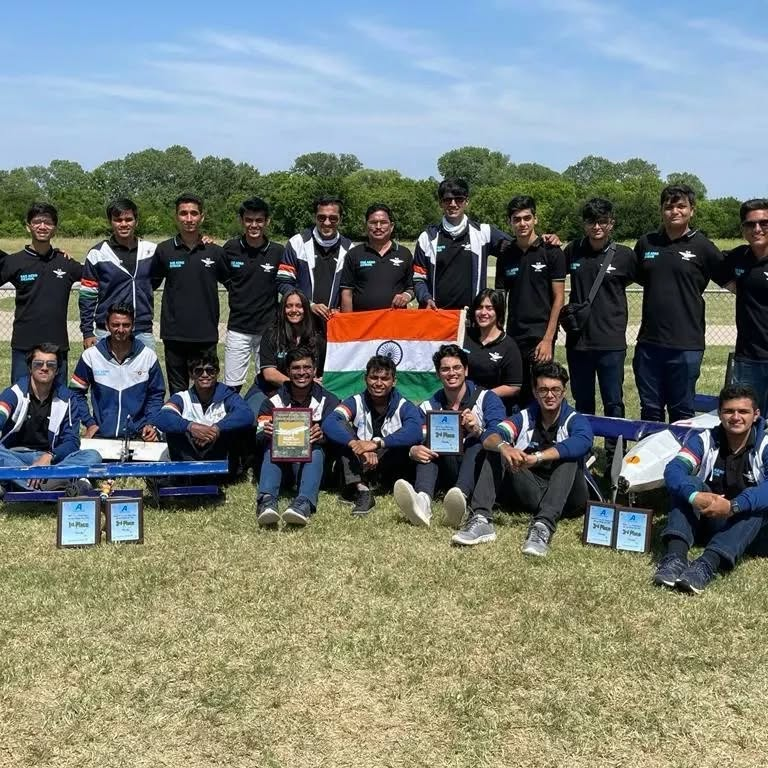
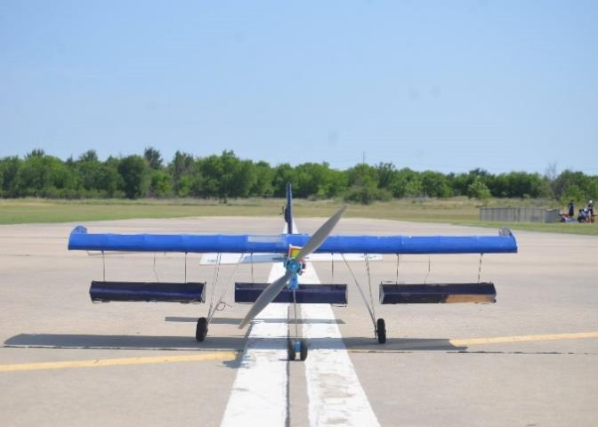
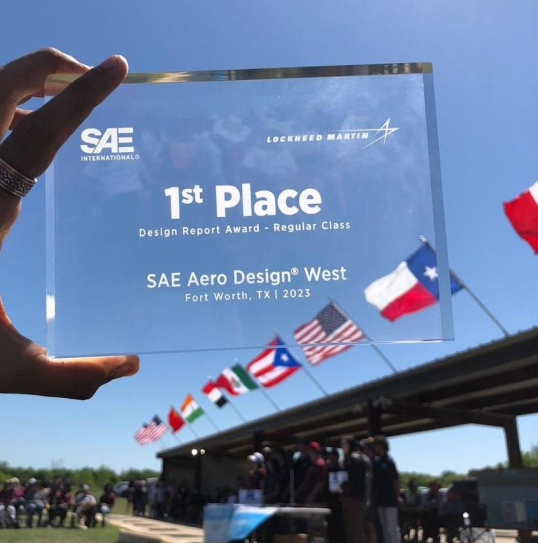
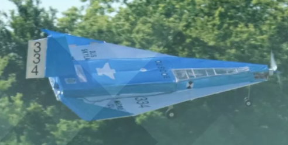
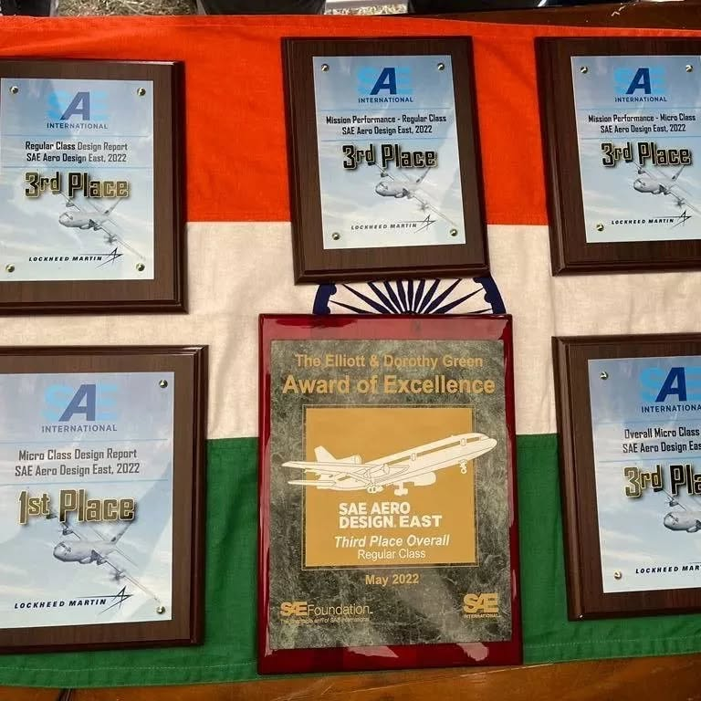

I became much more comfortable with SolidWorks, assemblies, aircraft layout, and thinking about whether a part could actually be made.

SAE Aero Design East 2022 | Fort Worth, Texas
From classroom aero theory to a global RC aircraft competition.
DJS Skylark was where aircraft stopped being just theory for me. I got to work on real structural decisions, fabrication, testing, repairs, and flight-readiness problems while the team prepared for SAE Aero Design. As part of the Structure & Stability team, I learned how much careful engineering goes into making an aircraft not just look right on paper, but actually fly reliably.

2
Years of aircraft development
6
Members mentored
CAD
SolidWorks modelling and assemblies
FEA
Structural analysis and validation
CFD
ANSYS-based aerodynamic studies
Code
MATLAB and Python for analysis
What I Learned
This project taught me engineering by making me do it for real.
I learned the most when the work left the classroom and became physical. A small design choice in CAD could affect fabrication, repair, stability, testing, or how clearly we could explain the aircraft during reviews.
I used structural analysis, ANSYS, MATLAB, and Python to make better tradeoffs instead of relying only on intuition.
I learned 3D printing, fabrication, repair work, testing discipline, and how to communicate clearly when the stakes were real.



Second Year Growth
The second year pushed me to take more ownership.
By the 2023 cycle, I was no longer just trying to understand the aircraft. I was building design logic, coordinating with teammates, and turning analysis into choices the team could actually build around.


My Learning Path
How the project slowly turned tools into judgement.
Learning to read the rulebook properly
At first, the SAE rulebook felt like a long list of restrictions. Over time, I learned to read it as a design problem: payload, scoring, materials, aircraft size, and what the judges would care about.
Seeing CAD as more than a model
SolidWorks helped me see how one part affects the rest of the aircraft. Tail moment, payload placement, structure, and assembly all had to work together.
Using analysis to make choices clearer
Structural analysis and ANSYS helped me move from "this should work" to "this is why it should work." It made loads, deformation, failure points, and airflow easier to discuss with the team.
Learning when the aircraft was in my hands
Fabrication taught me things CAD could not. 3D printed parts, assembly issues, field repairs, and small structural fixes all showed me what it takes to make a design flight-ready.
Getting better at explaining engineering
Reports, reviews, mentoring, and competition deadlines made communication just as important as the analysis. I had to explain decisions clearly to teammates, juniors, and reviewers.
Project Outcome
The results mattered because they showed the work held up outside our workshop.
YearCategoryMicro ClassRegular Class
2022Design Report1st Worldwide3rd Worldwide
2022Mission Performance3rd Worldwide3rd Worldwide
2022Technical Presentation5th Worldwide4th Worldwide
2022Overall3rd Worldwide3rd Worldwide
2023Design Report1st Worldwide1st Worldwide
2023Mission Performance5th Worldwide6th Worldwide
2023Technical Presentation5th WorldwideNot listed
2023Overall5th Worldwide9th Worldwide

Skills Built
What I carried forward from this project.
SolidWorks to physical parts
I created SolidWorks models and assemblies, translated them into 3D printed and fabricated parts, and planned around real build constraints.
Airframe reliability
I worked on load paths, repair readiness, and structural choices that improved stability, durability, and flight reliability.
ANSYS, MATLAB, Python
I implemented ANSYS studies and MATLAB/Python calculations to compare configurations, validate assumptions, and explain tradeoffs.
Leadership and communication
I led the Structure & Stability team, mentored six members, coordinated build work, and helped troubleshoot aircraft stability issues.
Python for design decisions
I developed a Python script to compare tail moment, cargo configuration, planform, and performance choices, reducing testing time and improving score-focused decisions.
Learning through constraints
SAE Aero Design taught me that aircraft design is never one isolated calculation. Payload, stability, manufacturability, mission performance, and build feasibility all pull on each other.
Building with accountability
The project became real during fabrication and assembly. CAD intent had to survive material choices, 3D printed parts, manufacturing limits, repair needs, and competition deadlines.
Flying under competition pressure
Competition showed me what engineering quality looks like under pressure: analysis, leadership, communication, and hands-on execution all showing up at the same time.